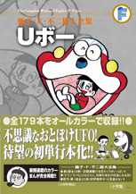

| |

＜毎日こどもしんぶん掲載集＞
定価：本体1,700円＋税
A5判／384ページ
好評発売中！
※収録内容は変更になる
場合があります。

|
★円ばんはともだち（1976年3月27日号）
★花見にとんでゆけ（1976年4月3日号）
★学校に行こう（1976年4月10日号）
★ぼくはＵびん屋（1976年4月17日号）
★おるすばんはどろぼうと（1976年4月24日号）
★まいごのこいのぼり（1976年5月1日号）
★池をつくろう（1976年5月8日号）
★しゃぼん玉が大あばれ（1976年5月15日号）
★雲にのりたい（1976年5月22日号）
★ライオンさんいらっしゃい（1976年5月29日号）
★人形あそび？（1976年6月5日号）
★すてきな巣箱（1976年6月12日号）
★宇宙きのこのかさ（1976年6月19日号）
★超強力ミニモーター（1976年6月26日号）
★ホカホカプール（1976年7月3日号）
★すすむはもうおとな？（1976年7月10日号）
★水でっぽうクリーム（1976年7月17日号）
★ウルパーマン（1976年4月24日号）
★海なんかこわくない（1976年7月31日号）
★愛犬ざぶとん（1976年8月7日号）
★うでクーラー（1976年8月14日号）
★おばけになれよう（1976年8月21日号）
★紙ひこうきにのって（1976年8月28日号）
★お月さまふうせん（1976年9月4日号）
★ミニカーで文通しよう（1976年9月11日号）
★やさしいふえの音（1976年9月18日号）
★空とぶ糸でんわ（1976年9月25日号）
★ここほれワンワン（1976年10月2日号）
★宇宙まめ（1976年10月9日号）
★どこでもドアー（1976年10月16日号）
★ごちそうカード（1976年10月23日号）
★おもちゃでドライブ（1976年10月30日号）
★カキの木 モモの木 おイモの木
（1976年11月6日号）
★ひみつのかくれ箱（1976年11月13日号）
★おもちゃの怪獣（1976年11月20日号）
★ふうせんりょこう（1976年11月27日号）
★絵本の中で子ブタをすくえ（1976年12月4日号）
★怪力手ぶくろ（1976年12月11日号）
★おもちゃの病院（1976年12月18日号）
★鏡の中に注意しろ（1976年12月25日号）
★広くてあったかいお正月（1977年1月1日号）
★もっと雪がほしい（1977年1月8日号）
★指人形ロボット（1977年1月15日号）
★しりとり箱（1977年1月22日号）
★ストップピストル（1977年1月29日号）
★モノレールにのろう（1977年2月5日号）
★手品ふろしき（1977年2月12日号）
★組みたて式ペット（1977年2月19日号）
★風船ボート（1977年2月26日号）
★おうちでさかなつり（1977年3月5日号）
★まほうのランプ（1977年3月12日号）
★ペラペラになったすすむ（1977年3月19日号）
★地下にうちをつくろう（1977年3月26日号）
★変身服（1977年4月2日号）
★せんすいガム（1977年4月9日号）
★たからさがし機（1977年4月16日号）
★お部屋のハイキング（1977年4月23日号）
★列車がはこびます（1977年4月30日号）
★なんでもリモコン（1977年5月7日号）
★て早くしんじゅをつくる法（1977年5月14日号）
★ままごとハウス（1977年5月21日号）
★万能きびだんご（1977年5月28日号）
★なんでもネジ（1977年6月7日号）
★ホタルの光（1977年6月11日号）
★雨よけぼうし（1977年6月18日号）
★ジュースが飲みたい（1977年6月25日号）
★部屋でできる花火!?（1977年7月2日号）
★氷の部屋（1977年7月9日号）
★スクスクホルモン（1977年7月16日号）
★夏には「くもはなび」（1977年7月23日号）
★海をつくろう（1977年7月30日号）
★おもちゃのたまご（1977年8月6日号）
★お知らせ時計（1977年8月13日号）
★写真スケッチブック（1977年8月20日号）
★フルーツねんど（1977年8月27日号）
★ふわふわふろしき（1977年9月3日号）
★おどりだしたらとまらない（1977年9月10日号）
★草むら探検車（1977年9月17日号）
★ぬけあなわ（1977年9月25日号）
★そのとおりシール（1977年10月1日号）
★すすむのかげぼうし（1977年10月8日号）
★ロボットねんど（1977年10月15日号）
★空気えんぴつ（1977年10月22日号）
★ピストルクリーム（1977年10月29日号）
★やじるしのほうへ（1977年11月5日号）
★かためライト（1977年11月12日号）
★人形しばい機（1977年11月19日号）
★ひもと遊ぼう（1977年11月26日号）
★のびのび手ぶくろ（1977年12月3日号）
★ドロンドロン（1977年12月10日号） |
★めだまくん（1977年12月17日号）
★未来めがね（1977年12月24日号）
★小さくなって遊ぼう（1978年1月1日号）
★おふろはたのしい（1978年1月7日号）
★くるまのおつかい（1978年1月14日号）
★きせつベルト（1978年1月21日号）
★ストライク帽（1978年1月28日号）
★どこでも表札（1978年2月4日号）
★少しの雪でもたのしさいっぱい
（1978年2月11日号）
★絵が動くクレヨン（1978年2月18日号）
★すすむのスーパーカー（1978年2月25日号）
★大きくなる虫めがね（1978年3月4日号）
★テレビつりざお（1978年3月11日号）
★めいろつくり機（1978年3月18日号）
★雲のお池（1978年3月25日号）
★ふくらしポンプ（1978年4月1日号）
★へんそうシャツ（1978年4月8日号）
★インスタントすべり台（1978年4月15日号）
★命中ピストル（1978年4月22日号）
★声ふくろづめマイク（1978年4月29日号）
★空中フック（1978年5月6日号）
★ぼうけんめがね（1978年5月13日号）
★手のりえさ（1978年5月20日号）
★いすがヒヒンとないた（1978年5月27日号）
★ふんわりガス（1978年6月3日号）
★パラシュートぼうけん（1978年6月10日号）
★鏡のつりぼり（1978年6月17日号）
★とおせんぼチョーク（1978年6月24日号）
★三階ができたよ（1978年7月1日号）
★北極の風（1978年7月8日号）
★入道雲をのぼろう（1978年7月15日号）
★はな水はきれいだな（1978年7月22日号）
★服うごかしライト（1978年7月29日号）
★庭で海水浴（1978年8月5日号）
★台風でサーフィン（1978年8月12日号）
★おとしものをさがせ（1978年8月19日号）
★ドライブごっこ（1978年8月26日号）
★ロボットブロック（1978年9月2日号）
★ストップライト（1978年9月9日号）
★ゆうえんちざぶとん（1978年9月16日号）
★ほんものカメラ（1978年9月23日号）
★ほんものカメラでお店屋さん（1978年9月30日号）
★地図でひとさがし（1978年10月7日号）
★エレベーターまめ（1978年10月14日号）
★おしゃべりガス（1978年10月21日号）
★はね手ぶくろ（1978年10月28日号）
★カメレオンしっぽ（1978年11月4日号）
★つみき城へおいでよ（1978年11月11日号）
★くも糸でつなわたり（1978年11月18日号）
★あたり矢（1978年11月25日号）
★番犬ばこ（1978年12月2日号）
★かけっこゼッケン（1978年12月9日号）
★動物語ふりかけ（1978年12月16日号）
★三ついいことしたら（1978年12月23日号）
★初日の出を見たい（1979年1月1日号）
★なんでもあげろ（1979年1月6日号）
★もち月（1979年1月13日号）
★ヨクスベール（1979年1月20日号）
★おもくなーれ（1979年1月27日号）
★どこでも草花（1979年2月3日号）
★なんでもラジコン（1979年2月10日号）
★動物がラジコンに…（1979年2月17日号）
★ひもの友だち（1979年2月24日号）
★おふろゆうえんち（1979年3月3日号）
★絵で買うはんばい機（1979年3月10日号）
★手がき鉄道（1979年3月17日号）
★テルテルロケット（1979年3月24日号）
★ハンコがみ（1979年4月1日号）
★いなかにおひっこし!?（1979年4月7日号）
★テレビ番組をつくろう（1979年4月14日号）
★どうぶつめがね（1979年4月21日号）
★ビュウストロー（1979年4月28日号）
★消しゴムで大さわぎ（1979年5月5日号）
★おかしの家をつくろう（1979年5月12日号）
★絵本ができたよ（1979年5月19日号）
★ポスターになったすすむ（1979年5月26日号）
★かたづけライト（1979年6月2日号）
★のりものふうせん（1979年6月9日号）
★紙すもうとりにはかなわない（1979年6月16日号）
★しかられボール（1979年6月23日号）
★レールおしだし機（1979年6月30日号）
★部屋の中の大宇宙（1979年7月7日号）
★ふうせん糸（1979年7月14日号）
★おともクーラー（1979年7月21日号）
★手のり金魚をまもれ（1979年7月28日号）
★いいなり紙ひこうき（1979年8月4日号）
★ご近所ハイキング（1979年8月11日号）
★室内漂流記（1979年8月18日号）
★もしもしとさようなら（1979年8月25日号）
|